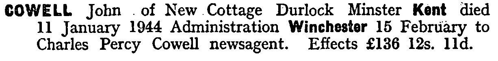

John Cowell 1858 - 1944
[ Home ] | [ Calendar ] | [ Surnames Index ] | [ Errors ] | [ Family History ]A farm waggoner and the child of Troward Cowell (an agricultural labourer) and Sarah Bennett, John Cowell, the great-grandfather of Nigel Horne, was born in Wingham, Kent, England on 17 May 18581,2,3,4,5,6,7, was baptised there at St Mary The Virgin Church on 27 Jun 1858 was married twice - to Emma Culmer (on 8 Feb 1879 in Westbere, Kent, England) Harriett Osborne (c. Nov 1899 in Thanet, Kent, England, following the death of Emma on 7 May 1889)10. He had 6 children with Emma Culmer: Charles Percy, Alfred John, George Troward, Emma Jane, Edith Eliza and James Frederick.
During his life, he was living at Stodmarsh Street, Stodmarsh, Kent on 7 Apr 186116; at Nethergone, Chislet, Kent on 2 Apr 187113; at Wayborough, Minster, Thanet, Kent on 3 Apr 188112; in Upstreet, Kent, England on 5 Apr 189111 following the death of his wife on 7 May 1889; at 2 Woodchurch Farm Cottages, Acol, Kent on 31 Mar 190117; at Woodchurch Farm, Acol, Kent on 2 Apr 191114 (when he was living with his); at Sandhills, Ash, Kent on 19 Jun 192118; and at 7 Pouces Cottages, Manston, Kent on 29 Sept 193915. In 1921 he was working at Mr Quested (Farmer) at Goldstone, Ash, Kent, England.
He died on 11 Jan 1944 at New Cottages, Durlock, Minster, Thanet, Kent8,9 (cerebral haemorrhage) (unmarked grave in Minster Cemetery. Value of estate £136:12:11).
Parents
- Troward was born c. 1831
- Sarah Rebecca was born c. 1832
Children
- Charles Percy was born on 9 Mar 1879
- Alfred John was born on 8 May 1880
- George Troward was born c. Feb 1882
- Emma Jane was born c. Feb 1883
- James Frederick was born on 2 Mar 1887
Citations
- 1861 England Census Online publication - Provo, UT, USA: The Generations Network, Inc., 2005.Original data - Census Returns of England and Wales, 1861. Kew, Surrey, England: The National Archives of the UK (TNA): Public Record Office (PRO), 1861. Data imaged from the National
- 1871 England Census Online publication - Provo, UT, USA: The Generations Network, Inc., 2004.Original data - Census Returns of England and Wales, 1871. Kew, Surrey, England: The National Archives of the UK (TNA): Public Record Office (PRO), 1871. Data imaged from the National
- 1881 England Census Online publication - Provo, UT, USA: The Generations Network, Inc., 2004. 1881 British Isles Census Index provided by The Church of Jesus Christ of Latter-day Saints © Copyright 1999 Intellectual Reserve, Inc. All rights reserved. All use is subject to the
- 1891 England Census Online publication - Provo, UT, USA: The Generations Network, Inc., 2005.Original data - Census Returns of England and Wales, 1891. Kew, Surrey, England: The National Archives of the UK (TNA): Public Record Office (PRO), 1891. Data imaged from The National
- 1901 England Census Online publication - Provo, UT, USA: The Generations Network, Inc., 2005.Original data - Census Returns of England and Wales, 1901. Kew, Surrey, England: The National Archives of the UK (TNA): Public Record Office (PRO), 1901. Data imaged from the National
- 1911 England Census Online publication - Provo, UT, USA: Ancestry.com Operations, Inc., 2011.Original data - Census Returns of England and Wales, 1911. Kew, Surrey, England: The National Archives of the UK (TNA), 1911. Data imaged from the National Archives, London, England.
- England & Wales, FreeBMD Birth Index, 1837-1915 Online publication - Provo, UT, USA: The Generations Network, Inc., 2006.Original data - General Register Office. England and Wales Civil Registration Indexes. London, England: General Register Office. © Crown copyright. Published by permission of the Cont
- England & Wales, Death Index: 1984-2005 Online publication - Provo, UT, USA: The Generations Network, Inc., 2007.Original data - General Register Office. England and Wales Civil Registration Indexes. London, England: General Register Office. © Crown copyright. Published by permission of the Cont
- England & Wales, National Probate Calendar (Index of Wills and Administrations),1861-1941 Online publication - Provo, UT, USA: Ancestry.com Operations Inc, 2010.Original data - Principal Probate Registry. Calendar of the Grants of Probate and Letters of Administration made in the Probate Registries of the High Court of Justice in England. Londo
- England & Wales, FreeBMD Marriage Index: 1837-1915 Online publication - Provo, UT, USA: The Generations Network, Inc., 2006.Original data - General Register Office. England and Wales Civil Registration Indexes. London, England: General Register Office. © Crown copyright. Published by permission of the Cont
- 1891 England, Wales & Scotland Census - Findmypast (was age 32 and the head of the household)
- 1881 England, Wales & Scotland Census - Findmypast (was age 23 and the head of the household)
- 1871 England, Wales & Scotland Census - Findmypast (was age 12 and the son of the head of the household)
- 1911 Census for England & Wales - Findmypast (was age 52 and the head of the household)
- 1939 Register - Findmypast (was recorded at this address)
- 1861 England, Wales & Scotland Census - Findmypast (was age 2 and the son of the head of the household)
- 1901 England, Wales & Scotland Census - Findmypast (was age 42 and the head of the household)
- 1921 Census Of England & Wales - Findmypast (was age 63 and the head of the household)
Notes
Blind.
Media
John Cowell - Elizabeth Culmer - Marriage Certificate

John Cowell - Elizabeth Culmer - Marriage Certificate
John Cowell - birth certificate

John Cowell - death certificate

John Cowell
John Cowell (2)

John Cowell - probate

1911 UK Centus page 1

Thanet Advertiser - 18 Jan 1944
Doctor's Book
John Cowell - 3

England & Wales deaths 1837-2007 - BMD/D/1944/1/AZ/000224/088
1939 Register Transcription - TNA-R39-1820-1820G-008-30
England & Wales births 1837-2006 - BMD/B/1858/2/BH/000415/017
1891 England, Wales & Scotland Census Transcription - GBC-1891-0005761364
1861 England, Wales & Scotland Census Transcription - GBC-1861-0003425896
Canterbury Marriage Banns - GBPRS/CANT/M/94031997/1
1939 Register Transcription - TNA-R39-1820-1820G-008-31
1939 Register Transcription - TNA-R39-1820-1820G-008-32
1901 England, Wales & Scotland Census Transcription - GBC-1901-0005520258
England Births & Baptisms 1538-1975 - R_884740089
Kent Baptisms - GBPRS/CANT/B/96570737
1921 Census of England & Wales - GBC/1921/RG15/04492/0313/01
Family Tree

Map
Generated by ged2site. Last updated on Jul 3, 2024
Known Issues
May have been living with mother on 5 Apr 1891, but the addresses don't match or aren't detailed enough to be sure
May have been living with father on 5 Apr 1891, but the addresses don't match or aren't detailed enough to be sure